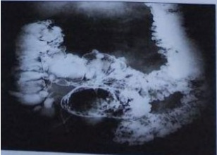

Questão 1 · Def inição e Etiologias · 4000184292Um paciente de 68 anos apresentou sangramento via retal recente, cessando espontaneamente. Em seguida, procurou o atendimento médico ambulatorial para iniciar a investigação da causa desse episódio. Com base no caso descrito e nos conhecimentos médicos correlatos, julgue o item a seguir. Em mais de 95% dos pacientes com sangramento gastrointestinal baixo, a fonte da hemorragia é o cólon, sendo o intestino delgado apenas ocasionalmente responsável.
A Certo.
B Errado.
Questão 2 · Métodos Endoscópicos · Cintilograf ia com Hemácias Marcadas · Métodos Radiológicos · 4000184291Um paciente de 68 anos apresentou sangramento via retal recente, cessando espontaneamente. Em seguida, procurou o atendimento médico ambulatorial para iniciar a investigação da causa desse episódio. Com base no caso descrito e nos conhecimentos médicos correlatos, julgue o item a seguir. A cintilografia com tecnécio-99m é o método mais sensível e preciso para localizar o sangramento gastrointestinal, tanto no intestino delgado quanto no grosso.
A Certo.
B Errado.
Questão 3 · Arteriograf ia · 4000184290Um paciente de 68 anos apresentou sangramento via retal recente, cessando espontaneamente. Em seguida, procurou o atendimento médico ambulatorial para iniciar a investigação da causa desse episódio. Com base no caso descrito e nos conhecimentos médicos correlatos, julgue o item a seguir. A angiogra a seletiva pode detectar hemorragia na faixa de 0,5 a 1,0 mL/min e geralmente é usada para o diagnóstico de hemorragia contínua, apresentando capacidade terapêutica.
A Certo.
B Errado.
Questão 4 · Sangramento por Tumor Colorretal · 4000184289Um paciente de 68 anos apresentou sangramento via retal recente, cessando espontaneamente. Em seguida, procurou o atendimento médico ambulatorial para iniciar a investigação da causa desse episódio. Com base no caso descrito e nos conhecimentos médicos correlatos, julgue o item a seguir. O carcinoma colorretal é uma das causas de hemorragia digestiva baixa, porém é uma causa incomum de sangramento significativo.
A Certo.
B Errado.
Questão 5 · Sangramento por Angiodisplasias · 4000184288Um paciente de 68 anos apresentou sangramento via retal recente, cessando espontaneamente. Em seguida, procurou o atendimento médico ambulatorial para iniciar a investigação da causa desse episódio. Com base no caso descrito e nos conhecimentos médicos correlatos, julgue o item a seguir. A angiodisplasia também pode ser uma causa de sangramento digestivo baixo, suas lesões são consideradas degenerativas adquiridas e são usualmente associadas à estenose da artéria aorta e à insu ciência renal, especialmente em pacientes idosos.
A Certo.
B Errado.
Questão 6 · Sangramento por Doenças Orif iciais · 4000184287Um paciente de 68 anos apresentou sangramento via retal recente, cessando espontaneamente. Em seguida, procurou o atendimento médico ambulatorial para iniciar a investigação da causa desse episódio. Com base no caso descrito e nos conhecimentos médicos correlatos, julgue o item a seguir. Uma das principais causas de sangramento anorretal são as hemorroidas e as fissuras anais.
A Certo.
B Errado.
Questão 7 · Cintilograf ia com Hemácias Marcadas · Métodos Diagnósticos e Terapêuticos · 4000183113Sangramento na População Pediátrica Lactente, sexo masculino, seis meses de idade, apresenta episódio súbito de enterorragia com moderada repercussão hemodinâmica. Qual é o exame mais adequado para o esclarecimento diagnóstico?
A Ultrassonografia de abdome.
B Tomografia computadorizada de abdome.
C Mapeamento com Tc99.
D Endoscopia digestiva alta.
Questão 8 · Investigação Complementar · Etiologias mais Frequentes · 4000169532Os casos de hemorragia digestiva oculta são definidos por ausência de lesões que expliquem o sangramento nos exames de endoscopia digestiva alta e ileocolonoscopia. Sobre esse assunto, analisar os itens abaixo: I. A investigação com cintilogra a com hemácias marcadas, angiotomogra a e cápsula endoscópica requer algum grau de sangramento ativo para identificar a fonte de sangramento. II. A principal causa de hemorragia digestiva oculta são erosões em intestino delgado. III. A enteroscopia com duplo balão deve ser o primeiro exame a ser feito em casos de hemorragia digestiva oculta em paciente instável hemodinamicamente. Está(ão) CORRETO(S):
A Somente o item I.
B Somente os itens I e III.
C Somente os itens II e III.
D Nenhum dos itens.
Questão 9 · Sangramento por Tumor Colorretal · 4000168621Um homem de 63 anos, hipertenso e diabético não insulino dependente apresenta queixa de hematoquezia há quatro meses e nega tenesmo, perda ponderal ou história familiar para neoplasia. Ao exame: Paciente eutró co, hipocorado 2+/4+, anictérico, acianótico, eupneico em ar ambiente e afebril. Restante do exame físico sem alterações evolutivas. O prosseguimento da investigação deve ser com:
A Pesquisa de sangue:oculto nas fezes;
B Toque retal e colonoscopia;
C Tomografia computadorizada de abdome e sangue oculto nas fezes;
D Prescrever sulfato ferroso oral e reavaliar em três meses
E Toque retal e enema opaco.
Revisar: possível letra faltando em enunciado
Questão 10 · Gastroenterologia · Sangramento Diverticular · 4000166561Sobre o manejo da hemorragia digestiva baixa (HDB) em adultos, assinale a alternativa correta.
A A doença diverticular dos cólons é a principal causa de HDB, sendo que, na maioria dos casos, ocorre resolução espontânea do sangramento.
B A angiografia dos vasos mesentéricos pode ser indicada nos casos de HDB, contudo há a desvantagem de não serem possíveis as intervenções terapêuticas durante o exame.
C O exame de escolha para o diagnóstico topográfico e etiológico da HDB em pacientes hemodinamicamente estáveis é a cintilografia com hemácias marcadas.
D Em pacientes com enterorragia volumosa não está indicada a endoscopia digestiva alta, já que essa é a apresentação clínica típica dos sangramentos colônicos.
Questão 11 · Sangramento Diverticular · 4000164822Paciente de 60 anos de idade dá entrada no pronto socorro com hemorragia digestiva baixa. O cirurgião deve pensar como principal hipótese diagnóstica:
A Doença hemorroidária
B Neoplasia colorretal
C Angiodisplasia
D Doença diverticular de cólon
Questão 12 · Cintilograf ia com Hemácias Marcadas · Manejo Clínico e Terapêutico · Métodos Radiológicos · 4000163630A hemorragia digestiva baixa (HDB) é definida como sangramento de uma fonte distal ao ligamento de Treitz, portanto pode se originar do intestino delgado, cólon e reto. Em relação à hemorragia digestiva baixa, é CORRETO afirmar que:
A A cintilografia detecta sangramento mais lentos, em torno de 2 a 3 ml por minuto com boa precisão de sítio de sangramento.
B A colonoscopia é contraindicada em casos de hemorragia digestiva baixa grave autolimitada, mesmo com paciente estável.
C Pacientes com hemorragia digestiva baixa refratária ao tratamento clínico, a opção seria a retossigmoidectomia.
D A colonoscopia deve ser o primeiro exame a ser solicitado ao diagnóstico de hemorragia digestiva baixa com instabilidade hemodinâmica.
E A angiografia pode ser método diagnóstico e terapêutico, mas requer uma taxa de sangramento de pelo menos de 1 ml por minuto.
Questão 13 · Hemorragia Digestiva Baixa HDB · Hemorragia Digestiva Alta Varicosa HDA Varicosa · 4000163434Hemorragia Digestiva Alta Não Varicosa HDA Nâo Varicosa Sobre hemorragia digestiva, considere as seguintes afirmativas: 1. Ângulo de Treitz é o reparo anatômico que define o limite entre hemorragia digestiva alta e baixa. 2. Varizes de esôfago, úlcera péptica, diverticulose colônica e angiodisplasia perfazem 85% das hemorragias agudas. 3. Cerca de 85% dos casos de hemorragia digestiva aguda decorrem de sangramentos acima do Ângulo de Treitz. 4. O intestino delgado é o responsável por 5 a 8% das hemorragias agudas. Assinale a alternativa correta.
A Somente a afirmativa 4 é verdadeira.
B Somente as afirmativas 1 e 4 são verdadeiras.
C Somente as afirmativas 2 e 3 são verdadeiras.
D Somente as afirmativas 1, 2 e 3 são verdadeiras.
E As afirmativas 1, 2, 3 e 4 são verdadeiras.
Questão 14 · Sangramento por Tumor Colorretal · 4000146438Mulher, 60 anos, apresenta constipação intestinal há 6 meses, acompanhada de hematoquezia e emagrecimento de 5 Kg no período. Refere hábito intestinal diário e fezes de consistência normal antes desse período. Assinale a alternativa que apresenta, respectivamente, a hipótese diagnóstica e exame complementar corretos.
A Neoplasia de intestino delgado – enteroscopia.
B Retocolite ulcerativa – enterorressonância.
C Doença diverticular – retossigmoidoscopia.
D Neoplasia de sigmoide – colonoscopia.
E Neoplasia de íleo terminal – cápsula endoscópica.
Questão 15 · Hemorragia Digestiva Baixa HDB · Colonoscopia · 4000146325Mulher de 49 anos de idade apresenta sangramento retal intermitente e dor abdominal há 2 meses. Refere que não há febre ou dor anal e perdeu 3 kg de peso no período. Não há história pessoal ou familiar de câncer. Exame físico: sinais vitais normais; IMC: 22 kg/m²; abdome: leve dor à palpação do quadrante inferior esquerdo; exame retal com hemorroidas grandes e friáveis. Exames séricos: hemoglobina: 10,2 g/dL e ferritina: 5 ng/mL. Quanto à principal hipótese diagnóstica, o manuseio inicial correto é:
A solicitar uma colonoscopia.
B solicitar uma sigmoidoscopia flexível.
C solicitar uma tomografia de abdome com contraste oral, retal e intravenoso.
D prescrever o tratamento tópico de hemorroidas.
E prescrever terapia como ferro oral.
Questão 16 · Sangramento Diverticular · 4000146306Homem de 68 anos de idade dá entrada na emergência por queixa de sangue vivo em moderada quantidade por via anal há 2 dias. Refere que já apresentou quadros semelhantes a este previamente. PA = 90 x 65 mmHg; FC = 120 bpm; abdome sem alterações; toque retal: presença de sangue vivo sem patologia ori cial ou tumorações. Assinale a alternativa com a hipótese diagnóstica mais provável para o paciente.
A Diverticulite colônica.
B Varizes esofágicas.
C Divertículo de Meckel.
D Neoplasia de cólon sigmoide.
E Diverticulose colônica.
Questão 17 · Def inição e Etiologias · Sangramento por Angiodisplasias · Sangramento por Tumor Colorretal · 4000145735Em relação à hemorragia digestiva baixa, assinale a alternativa correta.
A Acima dos 50 anos, a causa mais frequente é a neoplasia intestinal.
B Abaixo dos 50 anos, a causa mais frequente é a angiodisplasia.
C O sangramento diverticular raramente cessa espontaneamente.
D 95% dos casos originam-se do cólon.
E Angiodisplasia não é causa de sangramento digestivo baixo, somente de sangramento digestivo alto.
Questão 18 · Sangramento por Tumor Colorretal · 4000142462Homem, 76 anos, em investigação de anemia crônica e dor abdominal leve sem localização preferencial. Tem endoscopia digestiva alta normal. Do ponto de vista gastrointestinal, a hipótese diagnóstica e o exame complementar para prosseguir a investigação são
A adenocarcinoma de cólon sigmoide, retossigmoidoscopia.
B adenocarcinoma de delgado, enteroscopia.
C adenocarcinoma de cólon direito, colonoscopia.
D divertículo de Meckel, enteroscopia.
E diverticulose dos cólons, tomografía de abdome.
Questão 19 · Escolha do Método de Intervenção · Def inição e Etiologias · Manejo Clínico e Terapêutico · 4000141486Paciente de 65 anos, sexo masculino, admitido no PS com quadro de Hemorragia Digestiva Baixa (HDB). Nesse caso, assinale a alternativa que contempla a conduta correta.
A A avaliação inicial compreende o exame proctológico e a pesquisa de sangue oculto fecal.
B A abordagem cirúrgica está indicada no 2º episódio de hemorragia digestiva baixa quando a doença diverticular for a causa.
C A forma hipertônica da doença diverticular é causa de sangramento maciço.
D A neoplasia colorretal é a principal causa de HDB nessa faixa etária.
E A maioria cessa espontaneamente e a colonoscopia é o exame padrão-ouro.
Questão 20 · Def inição e Etiologias · 4000141363A(s) causa(s) mais frequente(s) de hemorragia digestiva baixa em adultos menores de 50 anos é/são:
A Doenças anorretais.
B Doença diverticular dos cólons.
C Isquemia mesentérica.
D Neoplasias.
Questão 21 · Colonoscopia · Endoscopia Digestiva Alta EDA · Sangramento Diverticular · 4000139782Paciente do sexo masculino, 72 anos, hipertenso, diabético em tratamento com acompanhamento irregular devido à pandemia, vem ao pronto-socorro pálido, taquicárdico e com quadro de enterorragia franca (fezes com sangue vivo) em moderada quantidade. Tem ecografia abdominal total há 3 meses com colelitíase, sem outros achados. Considerando o quadro clínico apresentado e os conhecimentos sobre hemorragia digestiva, é correto a rmar que esse paciente:
A necessita realizar apenas colonoscopia, sem endoscopia digestiva alta, porque hematêmese ocorre somente na hemorragia digestiva alta e enterorragia somente na hemorragia digestiva baixa.
B necessita de endoscopia digestiva alta, porque enterorragia pode ocorrer em casos de hemorragia digestiva alta de grande volume.
C necessita realizar colonoscopia após preparo de cólon e dieta sem fibras por 72 horas, sem endoscopia digestiva alta, porque a forma de apresentação de hemorragia digestiva alta se dá através de melena e não de enterorragia.
D necessita realizar colonoscopia, porque a hemorragia digestiva baixa pode se apresentar com enterorragia, sendo a principal responsável pelas hemorragias digestivas e correspondendo a 80% dos casos.
E não precisa de investigação endoscópica, uma vez que a hemorragia digestiva alta representa a minoria das hemorragias digestivas (15%), e a maioria para de sangrar no primeiro episódio.
Questão 22 · Colonoscopia · 4000138937Uma paciente do sexo feminino, com 51 anos de idade, procurou uma unidade básica de saúde (UBS) com queixas de hematoquezia, astenia e dor abdominal leve. Negou alterações de ritmo intestinal, alteração na característica das fezes e perda de peso. Relatou que tinha sido submetida a cirurgia para tratamento de hemorroidas havia 5 anos. No exame físico da paciente, o médico constatou, de relevante, somente mucosas moderadamente hipocoradas. Considerando esse caso clínico hipotético, julgue o item seguintes. O médico da UBS deve solicitar colonoscopia para investigação da hematoquezia.
A Certo.
B Errado.
Questão 23 · Def inição e Etiologias · 4000138934Uma paciente do sexo feminino, com 51 anos de idade, procurou uma unidade básica de saúde (UBS) com queixas de hematoquezia, astenia e dor abdominal leve. Negou alterações de ritmo intestinal, alteração na característica das fezes e perda de peso. Relatou que tinha sido submetida a cirurgia para tratamento de hemorroidas havia 5 anos. No exame físico da paciente, o médico constatou, de relevante, somente mucosas moderadamente hipocoradas. Considerando esse caso clínico hipotético, julgue o item seguintes. No momento, bastam o tratamento da anemia e o acompanhamento dos sintomas.
A Certo.
B Errado.
Questão 24 · Def inição e Etiologias · 4000138649Em geral, a incidência de sangramento gastrointestinal baixo aumenta com a idade, assim como sua etiologia passa a ser mais frequente. Com relação às hemorragias digestivas baixas, julgue os itens subsequentes. I. Na maioria das vezes (95%), o sangramento é colônico e, em uma minoria (5%), de delgado. II. A principal causa de sangramento colônico é a doença diverticular dos cólons (30-40%). III. Em geral, os sangramentos baixos são autolimitados e param de sangrar em quase 90% dos casos. IV. Entre outras causas de sangramento baixo, podem ser citados divertículo de Meckel, doença de Crohn, colite infecciosa, proctite por irradiação e angiodisplasia. A quantidade de itens certos é igual a.
A 0.
B 1.
C 2.
D 3.
E 4.
Questão 25 · Angiotomograf ia Computadorizada · Diagnóstico e Tratamento · 4000138637Assinale a alternativa que apresenta a situação em que a indicação de angiotomografia é inapropriada.
A suspeita de fístula aortoduodenal
B sangramento digestivo alto após a endoscopia normal
C sangramento digestivo baixo contínuo de pequena quantidade antes da colonoscopia
D sangramento digestivo (com sinais de sangramento ativo) e hipotensão controlada com cristaloide antes da colonoscopia
E sangramento de origem indeterminada
Questão 26 · Isquemia Colônica · Cirurgia · Colite Isquêmica · 4000137436Em RX simples de abdome, a observação mais específica para colite isquêmica é a presença de:
A sinal da impressão do polegar.
B espessamento da parede do cólon.
C ar fora de alça.
D distensão do cólon.
Questão 27 · Sangramento na População Pediátrica · 4000129494Criança, sexo masculino, 4 anos, acompanhado da mãe que relata sangramento retal maciço há 3 horas associado à taquicardia e sonolência. Nega dor abdominal. Ao toque retal, sem sangue em dedo de luva. Após reposição volêmica e estabilidade hemodinâmica, foi realizada endoscopia digestiva alta que foi normal. Qual o diagnóstico mais provável?
A Trombose de veia porta.
B Divertículo de Meckel.
C Enterocolite necrotizante.
D Intussussepção ileo-cólica.
Questão 28 · Def inição e Etiologias · Cirurgia · 4000120250Um paciente de 82 anos de idade foi levado ao serviço de emergência com história de melena há três dias. Na admissão, estava hemodinamicamente normal. Realizou endoscopia digestiva alta sem alterações. Com base nessa situação hipotética, assinale a alternativa correta.
A Na colonoscopia, foi identificada doença diverticular do cólon sigmoide, sem sinais de sangramento no momento do exame, sendo mandatório realizar colectomia de emergência.
B Na colonoscopia, foi identificado um tumor de reto a 3 cm da borda anal, sendo mandatório realizar exenteração pélvica.
C Na colonoscopia, foi identificada uma angiodisplasia de ceco e o melhor tratamento é o com radioterapia hemostática.
D Na colonoscopia, foi identificado um tumor de 2 cm em cólon sigmoide, com sangramento, e o melhor tratamento é realizar retossigmoidectomia.
E Na colonoscopia, não foram identificadas lesões, sendo melhor a laparotomiaexploradora para realizar a enterectomia total.
Questão 29 · Sangramento Diverticular · 4000118404Qual das seguintes é a causa mais comum de hemorragia digestiva baixa?
A Neoplasia.
B Angiodisplasia.
C Diverticulose.
D Fístulas.
E Vasculites.
Questão 30 · Colonoscopia · 4000099305Homem, 63a, veio ao Pronto Socorro referindo dor abdominal em cólica e um episódio de evacuação com sangue vivo há 1 dia. Exame físico: PA= 130x80 mmHg, FC= 78bpm, FR= 14irpm, oximetria de pulso (ar ambiente)= 98%; abdome: plano, normotenso, sem visceromegalia e sem irritação peritoneal; toque retal: sem sangue em dedo de luva ou massa. Hematócrito= 36%, hemoglobina= 11,8g/dL, RNI= 1,02 e R= 0,97. Endoscopia digestiva alta: normal. A CONDUTA É:
A Pesquisa de sangue oculto nas fezes.
B Radiograma de abdome ortostático e decúbito.
C Colonoscopia.
D Ultrassonografia de abdome.
Questão 31 · Escolha do Método de Intervenção · Métodos Diagnósticos e Terapêuticos · 4000082381O médico de uma UPA atende a paciente de 78 anos, sexo masculino, com enterorragia maciça e instabilidade hemodinâmica. Após instituídas medidas de suporte e de estabilização hemodinâmica, o paciente foi submetido a endoscopia digestiva alta, sendo excluídas doenças do trato digestivo superior. Diante disso, o exame a ser indicado para definir o diagnóstico etiológico deverá ser
A enterografia.
B tomografia computadorizada de abdômen.
C angiografia mesentérica.
D colonoscopia.
Questão 32 · Endoscopia Digestiva Alta EDA · Colonoscopia · Perda crônica de f erro · 4000061869Um homem de 69 anos se queixa de dispneia aos esforços e fraqueza. Nega doenças atuais ou prévias conhecidas. Não faz uso de medicamentos, e nega tabagismo ou etilismo. O exame físico não revela anormalidades. Exames de laboratório: Hg: 9,6g/dL; Hct: 29%; VCM: 78fL; HCM: 25,2pg; CHCM: 30g/dL; Reticulócitos: 0,5%; LG: 5.670/mm3; plq: 198.000/mm3; Fe: 34ng/mL; CTLF: 410mcg/dL; IST: 14%; ferritina: 6mcg/dL; creat: 0,9mg/dL. Considerando o caso descrito, assinale a alternativa que apresenta a conduta MAIS ADEQUADA para esse paciente.
A Realizar exame endoscópico dos tratos digestivos alto e baixo.
B Solicitar eletroforese de hemoglobina.
C Solicitar mielograma e biópsia de medula óssea.
D Solicitar pesquisa de sangue oculto nas fezes.
Questão 33 · Def inição e Etiologias · Síndrome de MalloryWeiss · Endoscopia Digestiva Alta EDA · 4000050680A hemorragia digestiva é um problema potencialmente grave e comum. A Hemorragia Digestiva Alta (HDA) é definida como sangramento do trato digestivo acima do ângulo de Treitz. Já a Hemorragia Digestiva Baixa (HDB) é um sangramento distal a esse ângulo. A hemorragia baixa ocorre com menor frequência que a hemorragia digestiva alta. Porém sua incidência aumenta com a idade, sendo uma situação comum em idosos. Sobre as hemorragias digestivas, assinale a alternativa CORRETA:
A A causa mais comum de hemorragia digestiva alta são as varizes de esôfago.
B A maioria dos sangramentos digestivos necessitam de tratamento cirúrgico para controle da hemorragia.
C A doença diverticular é a principal causa de hemorragia digestiva baixa nos pacientes com mais de 70 anos.
D Na síndrome de Mallory-Weiss, o sangramento é oriundo de uma ruptura esofágica e o tratamento cirúrgico é necessário.
Questão 34 · Manejo Clínico e Terapêutico · Sangramento por Tumor Colorretal · Sangramento Diverticular · 4000045817Um paciente de 63 anos, do sexo masculino, procura o Pronto Atendimento de um hospital com queixa de sangramento vermelho vivo via anal. Refere que há alguns meses notara presença de sangue junto às evacuações esporadicamente e acreditou que era hemorroida, porém houve aumento da frequência até que hoje se desesperou porque passou a apresentar sangramento em grande quantidade, com saída de coágulos, e se sentiu mais fraco, tendo inclusive caído ao se levantar para ir ao banheiro. Pediu aos vizinhos que o ajudassem porque mora sozinho. De comorbidades, tem diagnóstico de hipertensão arterial sistêmica em uso de losartana. Nega outras doenças, uso de outras medicações e cirurgias prévias. Ao exame físico, está em regular estado geral, sudoreico, hipocorado, com frequência cardíaca de 122 bpm, PA: 100x60 mmHg, afebril. É digna de nota ainda a presença de dor à palpação de fossa ilíaca esquerda e hipogástrio, sem massas palpáveis ou sinais de irritação peritoneal. À inspeção anal, há presença de sangue e dois botões hemorroidários exteriorizados, não redutíveis, sem sinais de trombose e, ao toque, o esfíncter anal é hipotônico, a mucosa retal é lisa e há presença de sangue em luva. Considerando exclusivamente as informações apresentadas, assinale a afirmativa correta.
A A provável causa do sangramento é câncer colorretal e as medidas terapêuticas iniciais devem incluir expansão volêmica com cristaloides e hemoderivados com monitorização intensiva e programação de endoscopia digestiva alta e colonoscopia nas próximas 24 horas a depender da estabilização hemodinâmica e possibilidade de preparo do cólon.
B provável causa do sangramento é câncer colorretal e as medidas terapêuticas iniciais devem incluir expansão volêmica com cristaloides e hemoderivados seguida de colonoscopia imediata para controle do sangramento.
C A provável causa do sangramento é doença diverticular do cólon e as medidas terapêuticas iniciais devem incluir expansão volêmica com cristaloides e hemoderivados seguida de colonoscopia imediata para controle do sangramento.
D A provável causa do sangramento é doença diverticular do cólon e as medidas terapêuticas iniciais devem incluir expansão volêmica com cristaloides e hemoderivados com monitorização intensiva e programação de endoscopia digestiva alta e colonoscopia nas próximas 24 horas a depender da estabilização hemodinâmica e possibilidade de preparo do cólon.
Questão 35 · Hemorragia Digestiva Baixa HDB · 4000036574Em relação às hemorragias agudas do trato gastrointestinal, assinale a alternativa incorreta.
A Hematoquezia geralmente está presente nos casos de sangramento digestivo baixo, embora também possa ocorrer em sangramentos originados no trato gastrointestinal alto.
B A hemorragia digestiva baixa é definida por sangramento que se origina do intestino grosso, ou seja, do ceco em diante.
C O sangramento cessa espontaneamente na maioria dos casos de hemorragia digestiva aguda baixa.
D Colonoscopia, sigmoidoscopia e angiografia podem ser usados na propedêutica de hemorragia digestiva baixa.
Questão 36 · Sangramento Suspeito do Intestino Delgado · Etiologias mais Frequentes · 4000032682Nos pacientes idosos que apresentam hemorragia gastrointestinal e com endoscopia digestiva alta e colonoscopia sem indicação da fonte do sangramento, a causa mais comum a ser suspeitada é a presença de:
A Úlcera da doença de Crohn.
B Angiodisplasia jejunal.
C Divertículo de Meckel.
D Divertículo Zenker.
E Divertículo duodenal.
Questão 37 · Proctite Actínica · 4000006554Paciente de 75 anos, em tratamento para câncer de próstata há 1 ano, submetido a prostatectomia radical e radioterapia, com quadro de tenesmo, diarreia com muco e episódios de hematoquezia. Ao toque retal, queixa-se dor intensa. Qual o diagnóstico mais provável para o caso?
A Invasão tumoral local
B Retocolite ulcerativa
C Retite actínica
D Gastroenterocolite aguda
Questão 38 · Def inição e Etiologias · Sangramento Diverticular · 4000004247A causa mais frequente de hemorragia digestiva baixa em pacientes na sexta e sétima décadas de vida é:
A neoplasia.
B angiodisplasia.
C polipose colônica.
D doença hemorroidária.
E doença diverticular do cólon.
Questão 39 · Def inição e Etiologias · 4000113354Carolina, 71 anos queixa-se de pequeno sangramento às evacuações de moderada quantidade há 02 semanas. As fezes normalmente são de coloração normal, sem dores para evacuar, sem história prévia de constipação. A paciente não apresenta comorbidades e não tem histórico familiar de neoplasia. As causas de hemorragia digestiva baixa mais prováveis:
A Doenças orificiais e Angiodisplasia
B Moléstia diverticular e Neoplasia colorretal
C Doenças orificiais e Moléstia diverticular
D Neoplasia colorretal e Doença inflamatória intestinal
E Doença hemorroidária e Doença de Crohn
Questão 40 · Doença Inf lamatória Intestinal · Colite Isquêmica · Diagnóstico laboratorial · 4000099150Considera-se "Hemorragia Digestiva Baixa" (HDB) qualquer sangramento cuja origem seja distal ao ângulo de Treitz (após a transição duodeno jejunal), o que abrange quase todo o intestino delgado, todo segmento colônico e o reto. (...) Existem inúmeras causas para HDB, cuja frequência pode variar com a literatura estudada. Sobre "Hemorragia digestiva baixa", marque a alternativa incorreta.
A Os pólipos benignos e carcinomas determinam a perda de sangue de forma crônica, como sangue oculto ou perdas sanguíneas inderteminantes.
B As neoplasias malignas podem se manifestar com HDB em mais de 10 a 15% dos casos.
C Todo paciente até a terceira década de vida com anemia crônica tem indicação de colonoscopia e endoscopia digestiva alta para excluir processo neoplástico.
D Os quadros de colite ulcerativa frequentemente apresentam diarreia com variável quantidade de hematoquezia. O quadro é acompanhado de dores abdominais, sensação de esvaziamento incompleto do reto após as evacuações (tenesmo retal), dor ao evacuar (puxo) e urgência evacuatória.
E Colite isquêmica é afecção mais comum entre idosos que apresentam doença arteriosclerótica generalizada; há perfusão visceral menos nesses pacientes, determinando insquemia localizada.
Questão 41 · Cápsula Endoscópica · Anemia f erropriva · Endoscopia Digestiva Alta EDA · 4000091297Jovem de 23 anos, professora de creche, refere não ter mais “energia” para lidar com as crianças. Além disso, vem sentindo importante cansaço para as atividades físicas que costumava fazer. Ao exame, parece hipocorada, tireoide palpável e tópica. Após o resultado de exames laboratoriais, identi cada uma anemia. A cinética de ferro mostrava: ferritina 12, saturação de transferrina 8%. Diante do caso, assinale a sequência de exames mais indicada para investigação diagnóstica.
A Cápsula endoscópica, colonoscopia, tomografia.
B Colonoscopia, endoscopia, cápsula endoscópica.
C Colonoscopia, endoscopia, tomografia.
D Endoscopia, colonoscopia, tomografia.
E Endoscopia, colonoscopia, cápsula endoscópica.
Questão 42 · Escolha do Método de Intervenção · Tratamento Cirúrgico · Arteriograf ia · 4000083557Homem de 69 anos de idade é atendido na emergência com hematoquezia iniciada há 4 horas. Encontra-se pálido, porém vigil e orientado. A pressão arterial é 110/80 mmHg, a freqüência respiratória de 24 irpm e a freqüência cardíaca de 96 bpm. O hematócrito no momento é de 24%, enquanto que em exame de rotina recente era de 32%. Qual das opções a seguir representa a melhor abordagem para a localização do sangramento intestinal deste paciente?
A A angiografia é mais apropriada para esta hemorragia gastrointestinal (GI) maciça;
B A angiografia é pouco útil, já que o paciente não está estável;
C A colonoscopia é mais conveniente para localizar a hemorragia caso seja maciça;
D A colonoscopia pode ser diagnóstica e terapêutica neste caso leve de hemorragia GI;
E A cirurgia imediata com localização intraoperatória é adequada;
Questão 43 · Sangramento Diverticular · 4000080744A hemorragia digestiva baixa, na população geral, tem como causa mais frequente a:
A neoplasia
B angiodisplasia
C doença diverticular
D doença hemorroidária
Questão 44 · Cirurgia · Colite Isquêmica · 4000080732Um homem de 35 anos de idade previamente hígido é atendido na emergência 4 horas depois de ter completado uma maratona, com um quadro de dor abdominal tipo cólica, mais intensa em quadrante inferior esquerdo e um episódio de hematoquezia. Ao exame físico, estava hemodinamicamente estável e apresentava dor à palpação na fossa ilíaca esquerda. O exame a ser feito para o diagnóstico e a mais provável causa dos sintomas são,respectivamente:
A Anuscopia hemorróidas.
B Colonoscopia colite isquêmica.
C Colonoscopia diverticulite aguda.
D Tomografia computadorizada tumor sangrante do cólon direito.
Questão 45 · Sangramento por Angiodisplasias · Sangramento Diverticular · 4000072477Dentre as apresentadas abaixo, as principais etiologias de sangramentos massivos do cólon são:
A Câncer e doença inflamatória intestinal.
B Diverticulose e colite ulcerativa.
C Angiodisplasia e diverticulose.
D Colite ulcerrativa e angiodisplasia.
E Diverticulose e colite ulcerativa.
Questão 46 · Sangramento Diverticular · 4000071658A causa mais comum da hemorragia maciça no trato gastrointestinal baixo é:
A Carcinoma.
B Diverticulose.
C Diverticulite.
D Pólipos.
E Colite ulcerativa.
Questão 47 · Arteriograf ia · 4000071640Para a determinação do local de sangramento por arteriogra a seletiva na hemorragia digestiva baixa é necessário que esteja sangrando a uma velocidade de pelo menos:
A 0,05 a 0,1 ml por minuto.
B 0,05 a 0,1 ml por minuto.
C 0,5 a 1 ml por minuto.
D 3 a 10 ml por minuto.
E 3 a 5 ml por minuto.
Questão 48 · Sangramento Suspeito do Intestino Delgado · 4000069061Paciente masculino, 75 anos, lhe procura em sua UBS com história de anemia ferropriva. Já realizou duas colonoscopias e duas endoscopias sem alterações. Apresenta sangue oculto + nas fezes e cintilogra a realizada no momento do sangramento sugere foco de hemorragia em alça jejunal. No momento não apresenta sangramento. Qual dos exames abaixo é o mais indicado para auxiliar no diagnóstico deste paciente?
A Angiografia.
B Tomografia Computadorizada.
C Ultrassonografia.
D Cápsula Endoscópica.
Questão 49 · Enteroscopia · Cintilograf ia com Hemácias Marcadas · Arteriograf ia · 4000068975Paciente com quadro de hemorragia digestiva baixa. Realiza colonoscopia que não apresenta alterações. Durante acompanhamento ambulatorial, mantém-se assintomático, a despeito de quadro de anemia. Qual o MELHOR exame complementar visando a investigação do sítio do sangramento, neste paciente?
A Nova colonoscopia.
B Enteroscopia.
C Arteriografia.
D Cintilografia intestinal.
Questão 50 · Def inição e Etiologias · 4000067623São causas de hemorragia digestiva baixa, apresentando-se com sangue vivo nas fezes, EXCETO:
A Sangue deglutido.
B Volvo.
C Colite alérgica.
D Pólipo juvenil.
Questão 51 · Def inição e Etiologias · 4000064919Mulher de 71 anos, previamente hígida, iniciou com sangramento digestivo baixo, apresentando sangue vivo nas fezes em moderada quantidade. Durante o atendimento, encontra-se estável hemodinamicamente, abdome ácido e sem sinais de peritonite. A principal hipótese diagnóstica, que corresponde a causa mais prevalente de sangramento digestivo com as características descritas nesta faixa etária é:
A Polipose intestinal.
B Tumor de cólon.
C Diverticulose colônica.
D Angiodisplasia.
Questão 52 · Etiologias mais Frequentes · 4000052078A hemorragia gastrointestinal obscura requer uma abordagem cuidadosa para o diagnóstico e tratamento. Entre as causas específicas, aparecem as lesões do intestino delgado. Destas hemorragias nos pacientes idosos, 40% são causadas por:
A Neoplasia.
B Angiodisplasias.
C Doença de Crohn.
D Divertículo de Meckel.
E Invaginação intestinal.
Questão 53 · Sangramento Diverticular · 4000052071Comparado com a hemorragia GI alta, a hemorragia GI baixa é uma causa muito menos frequente de hospitalização, sendo o cólon a fonte do sangramento em 95% dos casos. Assinale, abaixo, a etiologia mais frequente de sangramento colônico agudo.
A Isquemia.
B Neoplasia.
C Doença anorretal.
D Doença diverticular.
E Doença intestinal inflamatória.
Questão 54 · Gastrologia Pediátrica · Hemorragia Digestiva Baixa HDB · Pediatria · 4000049921A hemorragia digestiva é rara em crianças, mas é um tema de grande importância por se tratar muitas vezes de uma emergência além de causar uma apreensão à família. As causas são diversas e a sistematização com a epidemiologia por idade, facilita na investigação diagnóstica. Uma das causas mais comuns de hemorragia digestiva baixa na faixa etária entre 0 a 30 dias é:
A síndrome hemolítico-urêmica.
B doença inflamatória intestinal.
C coagulopatia por deficiência vitamínica.
D divertículo de Meckel.
Questão 55 · Hemorragia Digestiva Baixa HDB · 4000043275Sobre o manejo da hemorragia digestiva alta em adultos, é correto afirmar que:
A o exame de escolha para o dignóstico topográfico e etiológico da HDB em pacientes hemodinamicamente estáveis é a cintilografia com hemácias marcadas.
B a angiografia dos vasos mesentéricos pode ser indicada nos casos de HDB, contudo tem a desvantagem de não serem possíveis as intervenções terapêuticas durante o exame.
C a doença diverticular dos cólons é a principal causa de HDB, sendo que na maioria dos casos, ocorre resolução espontânea do sangramento.
D a pacientes com enterorragia volumosa não está indicada a endoscopia digestiva alta, já que essa é a presentação clinica tipica dos sangramentos colonicos.
E em casos de HDB causada exclusivamente por doença diverticular dos cólons, deve-se ter o cuidado necessário com hemorragias pois a resolução do sangramento, por qualquer meio, é impossível.
Questão 56 · Diagnóstico · Diagnóstico laboratorial · 4000039246Quanto às indicações de solicitação de colonoscopia pelo médico da estratégia da saúde da família marque a alternativa incorreta:
A Investigação de anemia ferropriva por causa desconhecida, sem outros sinais e sintomas que orientem investigação inicial.
B Sangramento persistente em trato gastrointestinal inferior não atribuível a doença orificial.
C Episódio de melena ainda não investigado.
D Quando câncer colorretal ou pólipo adenomatoso avançado ocorreu em familiar de primeiro grau antes dos 60 anos ou em dois familiares de primeiro gau em qualquer idade, solicitar colonoscopia aos 40 anos ou 10 anos antes da idade de acometimento do familiar mais jovem. Se câncer colorretal ou pólipo adenomatoso avançado que ocorreu em familiar de primeiro grau com idade maior que 60 anos, solicitar colonoscopia aos 50 anos.
Questão 57 · Hemorragia Digestiva Baixa HDB · Sangramento por Angiodisplasias · Sangramento Diverticular · 4000038126Paciente OAF, masculino, 67 anos, informa que há 5 meses apresenta constipação intestinal, com vários episódios intermitentes, de hematoquezia e outros de melena. Procurou assistência médica e realizou colonoscopia, cujo laudo foi de ausência de lesões em todo o colo. Qual é a causa mais comum de hemorragia gastrointestinal originada no intestino delgado?
A Angiodisplasia
B Neoplasia
C Divertículo
D Divertículo de Meckel
Questão 58 · Def inição e Etiologias · Manejo Clínico e Terapêutico · Métodos Diagnósticos e Terapêuticos · 4000034652Sobre hemorragia digestiva baixa (HDB) é correto afirmar, EXCETO:
A a maioria das HDB representa emergência médica devido à instabilidade hemodinâmica que grande parte dos pacientes manifesta.
B Por definição é aquela hemorragia em que a etiologia se situa abaixo do ângulo duodeno-jejunal
C O exame endoscópico pode ser feito na vigência do sangramento.
D Doença diverticular, tumores e angiodisplasia são as principais causas de HDB no idoso.
Questão 59 · Diagnóstico e Tratamento · 4000023579Em relação a exames radiológicos e endoscópicos na presença de hemorragia digestiva, assinale a alternativa CORRETA.
A Os exames radiológicos são os mais indicados para determinar o local exato do sangramento.
B As guidelines específicas para a indicação precoce de endoscopia em pacientes pediátricos apontam que intervenções precoces diminuem a necessidade de transfusões.
C Os métodos endoscópicos não permitem determinar o local exato do sangramento.
D As cintilografias são úteis no diagnóstico de divertículo de Meckel, o qual pode se manifestar como causa de hemorragia digestiva baixa
Questão 60 · Def inição e Etiologias · 4000007972Como causas de hemorragia digestiva baixa podemos citar, EXCETO:
A Infecção por H.Pylori
B Carcinoma colorretal
C Fissura Anal
D Angiodisplasia
Questão 61 · Def inição e Etiologias · Manejo Clínico e Terapêutico · Métodos Diagnósticos e Terapêuticos · 4000003491Paciente do sexo masculino, 70 anos, hipertenso e cardiopata, dá entrada no serviço de pronto atendimento com quadro de hematoquezia e evoluiu com vários episódios de enterorragia, há 24 horas. O paciente se encontra hipocorado ++/4, FC: 100bpm, FR: 26 irpm, PA: 110x60mmHg. Seu exame físico do abdome não revelou alterações. Realizou um hemograma que demonstrou hematócrito de 27% e hemoglobina 9g/dl. Assinale a alternativa INCORRETA:
A Uma vez que o paciente apresenta instabilidade hemodinâmica, a abordagem mais efetiva para o caso é a laparotomia urgente para a definição do foco do sangramento e sua resolução.
B Há uma incidência crescente das hemorragias digestivas baixas no mundo devido ao aumento da idade da população associado ao uso crônico de anticoagulantes.
C A principal hipótese etiológica para o caso é o sangramento de divertículo no cólon direito, porém a angiodisplasia e a neoplasia de cólon são diagnósticos diferenciais.
D A endoscopia digestiva alta e a tomografia com contraste venoso podem fazer parte do organograma de investigação deste paciente.
Questão 62 · Investigação Complementar · Sangramento Suspeito do Intestino Delgado · 4000127516Uma senhora de 48 anos de idade vem apresentando hemorragia digestiva baixa intermitente, de pequeno volume. Nunca teve instabilidade hemodinâmica. A endoscopia digestiva alta e a colonoscopia não mostraram alterações. Próximo exame que mais poderia auxiliar na identificação da causa do sangramento:
A Arteriografia mesentérica seletiva.
B Trânsito intestinal.
C Angiotomografia de abdome.
D Ultrassonografia abdominal.
E Ressonância nuclear magnética.
Questão 63 · Endoscopia Digestiva Alta EDA · 4000109057Paciente de 78 anos, sexo masculino com quadro de sangramento vivo nas fezes há 2 dias. Nega vômitos ou outros sintomas. Tem antecedente de hipertensão arterial e constipação crônica, necessitando de laxantes para evacuar. Ao exame, encontra-se em regular estado geral, FC 105 bpm, PA 124x72 mmHg, com abdome ácido e indolor, toque retal com sangue vivo em dedo de luva e anuscopia sem doença hemorroidária ou sangramento anorretal. Qual o primeiro exame a ser solicitado para elucidação diagnóstica?
A Colonoscopia.
B Tomografia computadorizada do abdome com contraste.
C Endoscopia digestiva alta.
D Videolaparoscopia diagnóstica.
E Arteriografia.
Questão 64 · Tratamento Cirúrgico · Cirurgia · 4000104817Homem de 50 anos foi internado por hemorragia digestiva baixa grave. Trouxe exame de enema opaco: Persiste com enterorragia volumosa e instabilidade hemodinâmica, apesar do tratamento clínico. O exame proctológico é normal e a fonte de sangramento não foi localizada. Qual a conduta mais apropriada?

A Ileostomia temporária.
B Colectomia total com ileostomia.
C Cirurgia de Hartmann.
D Proctocolectomia total com ileostomia.
Questão 65 · Sangramento Suspeito do Intestino Delgado · 4000098190Qual a causa específica mais comum de sangramento do intestino delgado?
A Angiodisplasia.
B Neoplasias.
C Doença de Crohn.
D Divertículo de Meckel.
Questão 66 · Métodos Diagnósticos e Terapêuticos · Sangramento na População Pediátrica · 4000059608Jonatas, masculino, tem 4 anos e foi levado ao Pronto Atendimento por sua mãe após episódio de enterorragia. A mãe relatou sangue vivo em grande quantidade no vaso sanitário, juntamente, porém não misturado, com as fezes. O menino recebeu atendimento inicial com reposição volêmica e foi internado para estabilização do quadro, que ocorreu após 48 horas, já com fezes normais. Assinale a alternativa que contém a principal suspeita e o exame complementar que deve ser solicitado para diagnóstico da mesma.
A Pólipos intestinais - Trânsito Intestinal contrastado.
B Invaginação intestinal - Ultrassonografia.
C Constipação com fissura perianal - Anuscopia.
D Divertículo de Meckel - Cintilografia.
Questão 67 · Colite Isquêmica · 4000055328Um homem de 78 anos de idade portador de brilação atrial crônica que não está em uso de anticoagulação, que procura o pronto atendimento de um hospital com quadro súbito de dor no abdome inferior seguida de diarreia sanguinolenta. O diagnóstico mais provável para esse caso, é:
A Sangramento de divertículo do cólon direito.
B Angiodisplasia do ceco.
C Câncer de cólon ascendente.
D Colite isquêmica.
E Colite pseudomembranosa.
Questão 68 · Sangramento Diverticular · 4000052581Assinale a alternativa que apresenta, corretamente, a patologia que é a causa mais frequente de hemorragia baixa maciça.
A Angiodisplasias.
B Doença diverticular do cólon.
C Doença hemorroidária.
D Doença inflamatória intestinal.
E Neoplasia.
Questão 69 · Def inição e Etiologias · Cintilograf ia com Hemácias Marcadas · Arteriograf ia · 4000047810Considere um paciente masculino de 78 anos que chega ao pronto-socorro acompanhado do lho, com história de sangue vivo nas fezes. Analise as informações abaixo que tratam de hemorragia digestiva baixa e assinale a única alternativa CORRETA.
A A cintilografia pode detectar sangramento digestivo em ritmo de 0,1 ml/min com acurácia variável para localização.
B A angiografia pode detectar sangramento digestivo em ritmo de 0,1 ml/min e possibilita o tratamento.
C A colonoscopia é o exame de escolha em hemorragias de grande porte.
D Nos sangramentos digestivos baixos abundantes, a etiologia mais comum nessa faixa etária é hemorroida.
E Após excluir o sangramento digestivo baixo, é fundamental realizar a endoscopia para excluir hemorragia digestiva alta.
Questão 70 · Def inição e Etiologias · 4000047807Com relação às hemorragias digestivas baixas é correto afirmar que:
A A hemorragia digestiva baixa (HDB) é caracterizada por todo sangramento proveniente de área localizada entre o estômago e o ânus, podendo se manifestar como enterorragia, melena ou sangramento oculto nas fezes.
B podem ser classificadas de acordo com sua localização no trato gastrintestinal, sendo o íleo terminal o local de maior ocorrência (74%).
C A maior parte dos casos de HDB cessa espontaneamente, porém em pacientes com risco de complicação grave, a terapia deve ser instituída para evitar recorrências. Os tratamentos mais utilizados são procedimentos hemostáticos por colonoscopia e embolização por angiografia transarterial, para sangramento mais intensos.
D A principal causa de HDB em adultos e idosos são as úlceras gastroduodenais (38%), seguida pela angiodisplasia. Já em adolescentes e adultos jovens (menores que 30 anos de idade), a causa mais comum é o divertículo de Meckel.
Questão 71 · Hemorragia Digestiva Baixa HDB · Hemorragia Digestiva Alta Não Varicosa HDA Nâo Varicosa · 4000039354A hemorragia digestiva (alta e baixa) é importante causa de morbidade e de atendimentos hospitalares de urgência. A caracterização em hemorragia alta ou baixa se dá por sua localização anatômica e de acordo com algumas etiologias. Assinale a alternativa que caracteriza corretamente as hemorragias digestivas.
A Hemorragia digestiva baixa se localiza abaixo da válvula ileocecal, podendo ser causada por angiodisplasia, doença diverticular, GIST de intestino delgado, colite isquêmica, neoplasia de cólon.
B Hemorragia digestiva alta se localiza acima do ângulo de Treitz, podendo ser causada por varizes esofágicas, esofagite, neoplasia gástrica, gastropatia da hipertensão portal, lesão de Dieulafoy.
C Hemorragia digestiva baixa se localiza acima da válvula ileocecal, podendo ser causada por angiodisplasia, doença diverticular, GIST de intestino delgado, colite isquêmica, neoplasia de cólon.
D Hemorragia digestiva baixa se localiza distalmente ao ângulo de Treitz, podendo ser causada por angiodisplasia, doença diverticular do cólon, lesão de Dieulafoy, síndrome de Mallory-Weiss.
Questão 72 · Métodos Diagnósticos e Terapêuticos · 4000033476F.G.H, 68 anos, sexo masculino, aposentado, deu entrada no serviço de urgência após ser encontrado desfalecido, em seu domicílio, em meio a grande quantidade de sangue evacuado. Apresentava PA de 100 x 60 mmHg; pulso de 112 bpm; descorado (2+/4+). Após estabilização, foi encaminhado para propedêutica. A esse respeito, assinale a alternativa CORRETA:
A A colonoscopia tem a vantagem sobre a arteriografia por ser, potencialmente, também terapêutica.
B A presença de sangue na luz intestinal implica em íleo funcional, prejudicando o preparo intestinal para a realização de colonoscopia.
C Angiografia esclarecedora necessita de, pelo menos, sangramento ativo de cerca de 0,5 ml/min.
D Cintilografia tem o inconveniente de detectar somente sangramento arterial.
Questão 73 · Sangramento Diverticular · Sangramento na População Pediátrica · 4000029247Sabemos que em mais de 95% dos pacientes com hemorragia digestiva baixa a origem do sangramento encontra-se no cólon. Sendo assim, assinale a principal causa de hemorragia digestiva baixa em crianças e adultos, respectivamente:
A Angiodisplasia e doença diverticular.
B Divertículo de Meckel e angiodisplasia.
C Intussuscepção e doença diverticular.
D Intussuscepção e Colite isquêmica.
E Divertículo de Meckel e doença diverticular.
Questão 74 · Escolha do Método de Intervenção · Cintilograf ia com Hemácias Marcadas · Arteriograf ia · 4000026625Com relação à hemorragia digestiva baixa, é CORRETO afirmar que:
A Devido à baixa resolução espontânea das hemorragias digestivas baixas, a abordagem inicial deve ser agressiva e o tratamento cirúrgico indicado de forma rotineira.
B Em casos de dificuldade diagnóstica por meio da colonoscopia, a angiografia possui uma sensibilidade maior que a cintilografia.
C Doença diverticular colônica é a principal causa de sangramento.
D O débito acima de 0,1 ml/min é suficiente para o diagnóstico angiográfico e posterior embolização.
E A realização de colonoscopia de urgência na vigência de sangramento não é possível, pois o paciente não está com o cólon preparado.
Questão 75 · Def inição e Etiologias · Métodos Diagnósticos e Terapêuticos · 4000019872Sobre as hemorragias digestivas baixas, assinale a alternativa incorreta.
A Hemorragia digestiva baixa é definida como um sangramento originário distalmente à válvula ileocecal.
B A taxa de ressangramento após o primeiro episódio de hemorragia por doença diverticular é de aproximadamente 25%.
C Endoclipes podem ser utilizados no tratamento endoscópico do sangramento por divertículo do cólon sigmoide.
D Embolização superseletiva ocorre ao nível dos vasa recta ou da artéria marginal.
Questão 76 · Diagnóstico endoscópico · Sangramento por Tumor Colorretal · 4000130105Mulher, 56a, com queixa de constipação intestinal há 6 meses com hematoquezia e emagrecimento de 4 Kg. Refere hábito intestinal diário e fezes de consistência normal antes desse período. A hipótese diagnóstica e o exame complementar são:
A Neoplasia de cólon direito; colonoscopia.
B Retocolite ulcerativa; enteroressonância.
C Neoplasia de sigmoide; colonoscopia.
D Doença diverticular; enteroressonância.
Questão 77 · Manejo Clínico e Terapêutico · 4000116177Homem, 51 anos, foi submetido à retirada de um adenoma viloso de 2 cm, no ceco, por via endoscópica (a retirada se deu aos pedaços). Setenta e duas horas mais tarde, ele procurou a emergência queixando-se de hematoquezia. Estava afebril; FC = 100 bpm e PA de 110 x 60 mmHg. Seu abdome era ácido e indolor. Leucograma de 10.000/mm³. Seu hematócrito era de 24%. Foi transfundido com 2 unidades de concentrado de hemácias e internado para observação. Vinte e quatro horas mais tarde, ele continuava apresentando hematoquezia, e o hematócrito continuava 24% com seus sinais vitais inalterados. Nova transfusão foi iniciada. Considerando o exposto, o próximo passo deve ser:
A Colonoscopia.
B Cintilografia.
C Angiografia.
D Continuar observação clínica.
E Colectomia direita.
Questão 78 · Sangramento Diverticular · 4000107049Assinale a alternativa correta. Com relação às causas de hemorragia digestiva baixa em idosos, a principal etiologia é:
A Doença diverticular dos cólons
B Angiodisplasia
C Doença inflamatória intestinal
D Pólipos colônicos
Questão 80 · Hemorragia Digestiva Baixa HDB · 4000082839Paciente do sexo feminino, 40 anos, evoluindo com enterorragia maciça. Fez endoscopia digestiva alta afastando hemorragia digestiva alta. Qual a principal hipótese diagnóstica?
A Carcinoma
B Diverticulose
C Diverticulite
D Pólipos
E Colite ulcerativa.
Questão 81 · Necessidade de Hemotransf usão · Abordagem Inicial · Colonoscopia · 4000078183Você está de plantão e recebe chamado para avaliação de uma paciente idosa em pós-operatório de artroplastia de quadril complicada por infecção de trato urinário. Vem em uso de cipro oxacino há 3 dias, através de acesso venoso periférico. O motivo do chamado é a eliminação de hemorragia digestiva, com eliminação de grande quantidade de sangue de coloração vermelha e amarronzada pelo reto. Apesar de sentir-se um pouco tonta, a paciente está consciente e orientada. Ela conta que recebeu diagnóstico de doença diverticular do cólon há cerca de 1 ano. Ao exame físico, sua pressão arterial é de 100 x 60 mmHg e a frequência cardíaca é de 110 bpm. Não há dor abdominal. Exames laboratoriais revelam hemoglobina = 9,0 g/dl e leucograma e coagulograma normais. Qual o próximo passo a ser tomado neste caso?
A Colonoscopia.
B Endoscopia digestiva alta.
C Lavagem gástrica através de sonda nasogástrica.
D Hemotransfusão.
E Reposição volêmica.
Questão 82 · Escolha do Método de Intervenção · Cintilograf ia com Hemácias Marcadas · Arteriograf ia · 4000056687Em relação à hemorragia digestiva baixa, é CORRETO afirmar que:
A A cintilografia com radionuclídeo detecta sangramentos mais lentos, em torno de 2 a 3ml por minuto.
B A angiografia pode ser tanto diagnóstica quanto terapêutica, mas requer uma taxa de sangramento de pelo menos de 1 ml por minuto.
C A colonoscopia é contraindicada em casos de hemorragia digestiva baixa autolimitada grave, mesmo com paciente estável.
D Em idosos com hemorragia digestiva baixa refratária ao tratamento clínico, a opção seria a retossigmoidectomia.
E A arteriografia com vasopressina pode ser eficaz na parada do sangramento, e, quando realizada com sucesso, não há necessidade de complementação diagnóstica com colonoscopia.
Questão 83 · Escolha do Método de Intervenção · Abordagem Inicial · Métodos Radiológicos · 4000054744Com relação à Hemorragia Digestiva Baixa, é CORRETO afirmar que:
A Doença diverticular cólica é a principal causa de sangramento.
B Devido à baixa resolução espontânea das hemorragias digestivas baixas, a abordagem inicial deve ser agressiva, e o tratamento cirúrgico indicado de forma rotineira.
C Em casos de dificuldade diagnóstica por meio da colonoscopia, a angiografia possui uma sensibilidade maior que a cintilografia.
D Colonoscopia de urgência na vigência de sangramento está indicado para diagnóstico e terapêutica.
E As alternativas A e D estão corretas.
Questão 84 · Tratamento Cirúrgico · Cirurgia · 4000033857Nádia, 83 anos, é internada em unidade de terapia intensiva por apresentar quadro de insu ciência coronária. Tem antecedentes de obstipação crônica em uso crônico de laxantes. Há um ano, hemorragia digestiva baixa, sendo que a colonoscopia evidenciou moléstia diverticular dos cólons. No momento, já apresentou oito episódios de evacuações sanguinolentas, havendo instabilidade hemodinâmica, com PA = 80 x 50 mmHg e FC = 120 bpm. O exame enviado ao laboratório mostrou Hb = 6,8 g, sendo que no dia anterior era de 12,3 g. O plantonista da UTI já solicitou endoscopia digestiva alta, que evidenciou gastrite leve de antro sem sinais de sangramento. Qual seria a conduta mais indicada, além da reposição de sangue?
A Colonoscopia.
B Hemicolectomia esquerda.
C Hemicolectomia direita.
D Colectomia subtotal.
E Colectomia total.
Questão 85 · Def inição e Etiologias · 4000033320Márcio, 65 anos, apresenta episódio de Hemorragia Digestiva Baixa (HDB) com repercussão hemodinâmica que foi controlada com tratamento clínico, não necessitando de transfusão sanguínea. A causa mais comum de HDB para esse paciente é a
A Doença hemorroidária.
B Angiodisplasias.
C Neoplasia do cólon
D Doença diverticular.
Questão 86 · Cápsula Endoscópica · 4000018473Paciente do sexo feminino, de cinquenta e três anos de idade, com quadro de anemia crônica por de ciência de ferro, compareceu a serviço médico, apresentando pesquisa de sangue oculto nas fezes com resultado positivo e os resultados de três videoendoscopias digestivas altas e duas colonoscopias, que indicaram boas condições de preparo, sem evidências de fonte de sangramento visível. Os exames foram realizados em um centro de referência para hemorragia digestiva. A paciente negou ocorrência anterior de sangramento digestivo visível. Considerando esse caso clínico, julgue o seguinte item. Em relação à abordagem clínica dessa paciente, o exame mais adequado para se estabelecer o diagnóstico inicial seria a enteroscopia.
A Certo.
B Errado.
Questão 87 · Def inição e Etiologias · Sangramento Diverticular · 4000015260Paciente de 78 anos, sexo feminino, é internada com quadro de enterorragia volumosa, que cursou com queda de hemoglobina e instabilidade hemodinâmica. Dentre as causas de sangramento colorretal, assinale a causa mais comum de sangramento grave:
A Angiodisplasia colônica.
B Hemorroida interna.
C Colite isquêmica.
D Diverticulose.
E Úlceras retais.
Questão 88 · Manejo Clínico e Terapêutico · Métodos Diagnósticos e Terapêuticos · 4000003850Paciente sexo feminino, 60 anos, refere hematoquezia há 3 meses, sem outros comemorativos. Das opções abaixo, qual a medida inicial mais adequada?
A Solicitar colonoscopia.
B Solicitar retossigmoidoscopia.
C Dosagem de CEA (Antígeno Carcinoembrionário).
D Realizar toque retal.
Questão 89 · Sangramento por Angiodisplasias · Gastroenterologia · 4000001325Qual das seguintes afirmações está CORRETA em relação às angiodisplasias do cólon?
A Fulguração da angiodisplasia deve ser realizada durante uma colonoscopia eletiva, independentemente da história de sangramento anterior.
B O sangramento da angiodisplasia é mais comum no lado esquerdo do paciente idoso.
C Uma angiografia normal durante um sangramento ativo exclui angiodisplasia como causa de hemorragia.
D As angiodisplasias variam de 1,5 a 2 mm e histologicamente são caracterizadas por capilares dilatados e tortuosos localizados na lâmina própria.
E Nenhuma das alternativas acima está correta.
Questão 90 · Manif estações Clínicas · Sangramento Diverticular · 4000000421Em qual das complicações da doença diverticular do cólon pode ser indicado o tratamento clínico?
A Hemorragia.
B Perfuração do divertículo.
C Carcinoma concomitante.
D Obstrução intestinal.
Questão 91 · Escolha do Método de Intervenção · Necessidade de Hemotransf usão · Sangramento Diverticular · 4000126407Mulher de 79 anos foi admitida no PS com queixa de eliminação de sangue vivo e coágulos pelo reto há 4 horas. Referia tontura e fraqueza acompanhando o quadro. Tem como antecedente apenas hipertensão arterial leve. Ao exame clínico, apresentava-se contactante, descorada ++/4+; FC: 100 bpm; PA: 100 x 60 mmHg e com sangue vivo ao toque retal sem outras alterações. Abdome sem particularidades. Extremidades: apenas varizes de membros inferiores e perfusão periférica satisfatória. Exames laboratoriais: Hb: 7,2 mg/dl; glicemia: 110 mg/dl; creatinina: 1,2 mg/dl. Com relação ao caso, podemos afirmar que:
A A confirmação da enterorragia pelo médico afasta a necessidade da realização de endoscopia digestiva alta.
B Apesar do quadro sugerir um sangramento súbito e volumoso, ele tende a ser autolimitado.
C A colonoscopia está contraindicada na vigência de sangramento pelo risco de perfuração do cólon.
D Está indicada a reposição de sangue, para estabilização clínica, seguida do tratamento operatório, pois esses sangramentos são recorrentes.
E Considerando a idade da doente e o quadro clínico, a angiotomografia é superior à colonoscopia para o diagnóstico e tratamento da enterorragia.
Questão 92 · Sangramento na População Pediátrica · 4000125229Pré-escolar, 4 anos, previamente hígida, apresenta sangramento retal importante, com queda significativa do hematócrito. Endoscopia digestiva alta e colonoscopia normais. O diagnóstico mais provável é:
A Pólipo juvenil.
B Divertículo de Meckel.
C Hiperplasia nodular linfoide.
D Doença de Crohn.
E Úlcera duodenal.
Questão 93 · Hemorragia Digestiva Baixa HDB · Cirurgia · 4000122041Um homem de 45 anos refere enterorragia há 1 dia. Diz ter dor abdominal discreta, difusa, em cólica. Nega episódios anteriores de perda de sangue nas fezes. É hipertenso, tabagista e etilista social. Está em regular estado geral, descorado, eupneico, um pouco ansioso. P: 110 bpm; PA: 90 × 70 mmHg. O abdome é ácido e indolor à palpação. Toque retal: sangue vivo, sem massas. Conduta, após a reanimação volêmica:
A Colonoscopia.
B Arteriografia.
C Endoscopia digestiva alta.
D Cintilografia.
E Angiotomografia.
Questão 94 · Cápsula Endoscópica · Sangramento Suspeito do Intestino Delgado · 4000086629Mulher, 68 anos, com anemia ferropriva. Sangue oculto nas fezes positivo. Endoscopia digestiva alta e colonoscopia normais. Qual a recomendação inicial frente a este caso clínico?
A Radiografia de trânsito intestinal.
B Realização de cápsula endoscópica.
C Infusão de ferro e controle laboratorial em 1 ano.
D Prescrição de estrogênio por suspeita de angiodisplasia intestinal.
E Exploração cirúrgica do intestino delgado por provável neoplasia.
Questão 95 · Hemorragia Digestiva Baixa HDB · 4000068326Matheus, 85 anos, chega ao pronto-socorro com hemorragia digestiva baixa de grande volume e instabilidade hemodinâmica, sem resposta adequada às medidas de reposição. Qual a conduta CORRETA?
A Colonoscopia.
B Arteriografia.
C Colectomia total de urgência.
D Colectomia parcial (a ser avaliado no ato da cirurgia) de urgência.
E Cintilografia.
Questão 96 · Sangramento por Doenças Orif iciais · 4000060441Paciente feminina de 40 (quarenta) anos apresenta dor ao evacuar e enterorragia separada das fezes. Qual é a provável causa da entororragia?
A Adenocarcinoma de reto.
B Divertículo de cólon.
C Angiodisplasia de ceco.
D Pólipo colônico.
E Fissura
Questão 97 · Def inição e Etiologias · 4000060440A causa mais comum da hemorragia maciça no trato gastrointestinal baixo é:
A Câncer.
B Diverticulose.
C Diverticulite.
D Pólipo.
E Colite ulcerativa.
Questão 98 · Manejo Clínico e Terapêutico · Métodos Diagnósticos e Terapêuticos · 4000046178ICJU, 49 anos, gênero masculino, fazendeiro, apresentou dois episódios consecutivos de enterorragia e procurou posto médico imediatamente. Ao exame, apresentava-se taquicárdico, hipotenso (PA: 100 X 70 mmHg) e com sudorese fria. Foram colhidas amostras de sangue para exame e passado cateter nasogástrico para aspiração. A secreção gástrica aspirada não apresentava sangue. Os exames mostraram hemoglobina de 11,9 g/dl e hematócrito de 42%, com 600.000/mm³ plaquetas. Global de leucócitos de 11.300/mm³. Em relação a este caso, assinale a alternativa CORRETA:
A Há indicação de cintilografia com hemácias marcadas, que indicará a exata localização anatômica do sangramento.
B Hematócrito normal com trombocitose e leucocitose sugere fortemente quadro infeccioso associado.
C O aspirado gástrico negativo para sangue exclui o diagnóstico de hemorragia digestiva alta.
D O hematócrito geralmente sofre alterações mais lentas que as alterações na contagem global de leucócitos.
Questão 99 · Ref ratariedade ao tratamento da anemia f erropriva · 4000065866Em relação à paciente com anemia ferropriva, sem causa aparente, refratária ao tratamento com ferro oral, deve ser considerada a seguinte doença: Respostas: 1 12 23 34 45 56 67 78 89
A Doença de Whipple.
B Polipose familiar.
C Doença celíaca.
D Angiodisplasia gastrointestinal.
E Linfoma do intestino delgado.